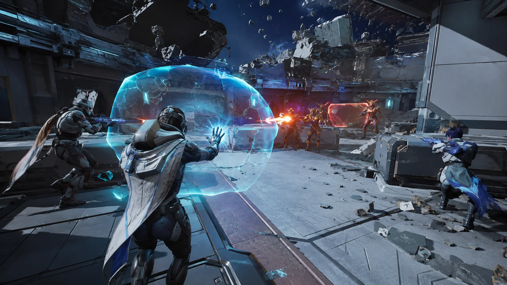

KINETIC HEROES
Movement and abilities are designed together so every character changes how you read the arena.

Master kinetic abilities, reshape the arena, and turn team coordination into unforgettable highlight plays.
FOLLOW DEVELOPMENTChoose a fighter with a distinctive combat rhythm, combine abilities with your squad, and control arenas that break apart as the match escalates.

Movement and abilities are designed together so every character changes how you read the arena.
Destroy cover, open sightlines, and turn defensive positions into new attack routes.
Readable ability combinations reward coordination without sacrificing individual expression.